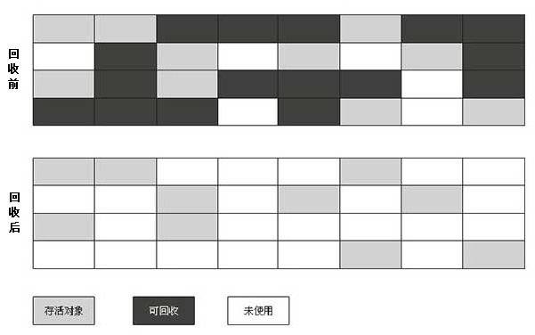
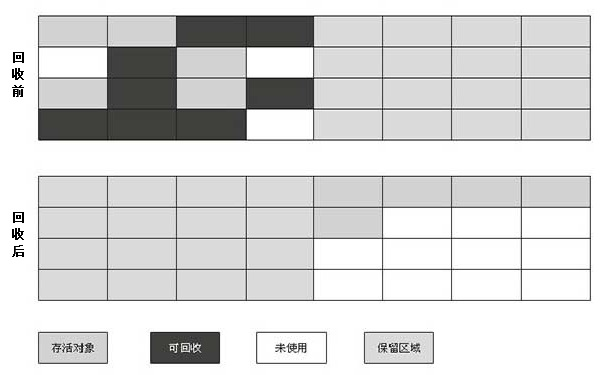
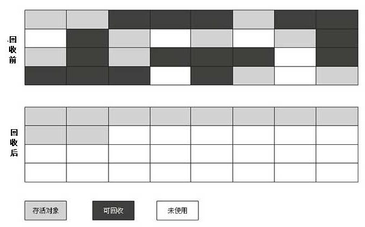

概述
GC需要考虑的三件事情：哪些内存需要回收、何时回收、怎么回收。了解GC是为了更加熟练地排查内存溢出、内存泄漏等问题，根据应用特点，选择合适的JVM参数，调优JVM。在Java各个运行时数据区域，线程私有的虚拟机栈、本地方法栈、程序计数器的内存分配和回收都具有确定性，随线程生而生，随线程死而死。Java堆和方法区是多线程共享的，对象的分配和回收都是动态的，后续讲到的GC也主要针对这两个区域。
收集对象的判断
对于GC而言，首先需要关注的问题就是哪些对象可以回收，目前有两种主流做法：引用计数算法（python)和可达性分析算法（java)。
引用计数算法
- 定义：每个对象都有一个引用计数器，当被引用时，计数器加1，当解除引用时，计数减1，当计数器为0时，表示该对象可以回收。
- 优点：实现简单、判断效率高
- 缺点：无法解决循环引用的问题，需要其他算法辅助
可达性分析算法
- 定义：定义一些GC Roots对象作为起点，凡是可以通过GC Roots对象直接或间接引用到的对象，就认为是可达的，对于不可达对象，就是需要回收的对象。
- 优点：解决了循环引用问题，不需要其他算法辅助
- 缺点：实现相对复杂，而且存在运行时卡顿的问题

在Java中，可作为GC Roots对象包括如下几种： - Java虚拟机栈局部变量表引用的对象
- 方法区静态类属性引用的对象
- 方法区常量引用的对象
- 本地方法栈JNI引用的对象
可达性与引用分类
在Java1.2版本之前，对象一共有3种状态：可达、可复活、不可达。GC Roots对象可以直接或间接引用到的对象，则该对象是可达的。一旦引用链断裂，就变成可复活的了,可复活对象在finalize方法中有且只有一次复活机会，复活就变成可达，否则就变成了不可达，等待被回收。Java1.2把可达性细分为：强可达、软可达、弱可达和幽灵可达，以描述一些“食之无味，弃之可惜”的对象（比如内存资源受限的缓存系统），对应四种引用强引用、软引用、弱引用、幽灵引用，四种引用强度依次减弱。
- 强引用(Strong Reference)与强可达（Strong Reachable)
强引用：代码中出现最多的引用，比如String s = new String("abc")。
强可达：只要至少存在一条GC Roots到该对象的引用链全是强引用的，就是强可达的；只要该对象是强可达的，该对象就永远不会被回收，内存不足，JVM宁愿报OOM异常。 - 软引用(Soft Reference)与软可达（Soft Reachable)
软引用：如SoftReference<Object> softReference = new SoftReference<>(new Object()), 用来描述一些有用但是非必要的对象，比如内存资源紧张的缓存系统。
软可达：对象不是强可达的，且至少存在一条GC Roots到该对象的引用链，所有引用强度大于等于软引用，且其中至少有一个引用是软引用的，就是软可达的；一个对象是软可达的，当Jave Heap空间充足时，它不会被回收，反之，就会被回收（当然也有复活的机会）。 - 弱引用(Week Reference)与弱可达（Weak Reachable)
弱引用：如WeakReference<Object> weakReference = new WeakReference<>(new Object()), 用来描述一中规范映射，当映射中的key还被其他对象引用时，就继续保留，否则，下次GC就会被清除，例如WeakHashMap。
弱可达：对象不是强可达，也不是软可达，且至少存在一条GC Roots到该对象的引用链，所有引用强度大于等于弱引用， 且其中至少有一个引用是弱引用，则该对象是弱可达的。弱可达的对象，只能活到下一次系统GC（当然也有复活的机会） - 可复活：对象不是强、软、弱可达的，但是可以通过某些对象的终结方法（Finalize)恢复到上述某种状态。
- 幽灵引用(Phantom Reference)与幽灵可达（Plantom Reachable)
幽灵引用：如PhantomReference<Object> weakReference = new PhantomReference<>(new Object()， new ReferenceQueue()), 主要用来实现除Finalize方法的以外更加复杂的资源回收机制, 因为Finalize方法执行时间不确定（gc线程优先级低，且该对象被复活过之后，就不会再执行该方法），而幽灵引用在对象被回收前会添加到引用队列中，使得资源回收线程可以得到一个通知（对于内存回收机制有严重依赖时，比如一定要该对象空间回收之后，JVM才能分配新对象，可以使用幽灵引用）
幽灵可达：对象不是强、软、弱可达的，也不是可复活的，且至少存在一条GC Roots到该对象的引用链，其中至少有一个引用是幽灵引用，则该对象是幽灵可达的，幽灵可达的对象是不可复活的。 - 不可达：对象不是强、软、弱、幽灵可达的，也不是可复活的，不可达对象就是要被回收的对象。
判断原则: 引用Java魔法堂：四种引用类型、ReferenceQueue和WeakHashMap
单条引用链的可达性以最弱的一个引用类型来决定；
多条引用链的可达性以最强的一个引用类型来决定；
注意几点：
- 软引用和弱引用在还没有被清除前（clear方法），可以使用get方法得对象的强引用，被清除后，则得到null，而幽灵引用的get方法一直为null
- 软引用、弱引用、幽灵引用在构建时，可以添加ReferenceQueue(幽灵引用必须添加）, 当被垃圾回收时，GC线程会将他们加入到对应的引用队列之中(enqueue)，对于软引用和弱引用，GC会调用他们的clear方法，而幽灵引用必须手动clear。
- 关于WeakHashMap的详细介绍请参考我的一篇文章《深入理解WeakHashMap实现》
- 关于引用队列ReferenceQueue 有各个方法enqueue(一个引用只能最多入队一次）、remove(移出队列中的对象，如果没有就一直等，或者等timeout时间），poll(也是移出队列中的对象，如果没有，就直接返回null)，具体可以看源码。
可复活对象在回收前，有一次拯救自己的机会，就是该对象覆盖了finalize方法，并且没有执行过，这样就可以有机会在fianalize方法中重新复活该对象，fianalize()方法是由低优先级线程Finalizer执行的，所以不保证能执行完，且最多执行一次。由于finalize()方法具有太多不确定性，所以强烈建议不要使用，可以使用try…catch…finally或者幽灵引用的方式。
1
2
3
4
5
6
7
8
9
10
11
12
13
14
15
16
17
18
19
20
21
22
23
24
25
26
27
28
29
30
31
32
33
34
35
36
37
38
39
40
41package com.sbwei.gc;
/**
* @author sbwei
*/
public class FinalizeEscapeGC {
public static FinalizeEscapeGC SAVE_HOOK = null;
public void isAlive(){
System.out.println("yes,i am still alive!");
}
protected void finalize() throws Throwable{
super.finalize();
System.out.println("finalize method executed!");
SAVE_HOOK = this;
}
public static void main(String[] args) throws Throwable{
SAVE_HOOK = new FinalizeEscapeGC();
SAVE_HOOK = null;
System.gc();
Thread.sleep(500);
if(SAVE_HOOK !=null){
SAVE_HOOK.isAlive();
}else{
System.out.println("no,i am dead!");
}
SAVE_HOOK = null;
System.gc();
Thread.sleep(500);
if(SAVE_HOOK !=null){
SAVE_HOOK.isAlive();
}else{
System.out.println("no,i am dead!");
}
}
}运行结果：
1
2
3finalize method executed!
yes,i am still alive!
no,i am dead!
垃圾收集算法
标记-清除算法（Mark-Sweep)
- 描述：标记-清除算法是最基础的算法，后续算法都是在这个算法的基础上，针对其不足的改进，一共分为两个过程：标记（不可达对象）和清除。
- 缺点：
1） 标记和清除两个过程效率不高
2） 会产生内存碎片问题

复制算法(Copying)
初级版
- 描述：将可用内存对半分开，每次使用其中的一半，当这一半使用完了，就把存活对象复制到另一半，并集中回收这一半。
- 优点: 不会产生内存碎片问题，内存分配只需移动栈顶指针，连续分配，实现简单，运行高效。
- 缺点: 每次只能利用一半的内存，利用率太低。

高级版 - 描述：由于Java中绝大多数（98%）对象是短命的，在下一次GC前就没用了，所以不需要对半开，可以划分成一个Eden空间和两个Survivor空间（From、To), 每次使用其中的一个Eden空间和Survivor空间（比如大小8:1:1，则利用率是90%）， 将存活对象复制到另一个Survivor空间，并清除Eden空间和刚用过的Suvivor空间。
- 优点：除了有初级版的优点外，内存利用率也大大提高。
- 缺点：由于不能保证每次存活的对象大小都小于10%的内存大小，所以需要其他内存做担保（Handle Promotion), 比如老年代， 当另一个Survivor容纳不下时，直接分配到老年代。
标记-整理算法(Mark-Compact)
- 描述：复制算法适合短命对象比例特别高的情况，如果每次存活过多，复制太多对象将严重影响效率，而且不想浪费空间，还行需要其他内存担保。标记-整理算法标记过程标记-清除算法一样，整理的时候，是把所以对象移到一端，然后清理掉边界外的内存空间。
- 优点：内存利用率高（100%），整理后不存在内存碎片。
- 缺点：效率不高，需要整理和清除

分代收集思想
90%以上的Java对象都是短命的
90%以上的Java程序都会有长命对象
根据以上想法，将Java堆空间分为年轻代（Young Gerneration） 和 老年代（Old Gerneration）， 其中年轻代大多数对象都是短命的，可以使用高级版复制算法， 并由老年代担保，老年代由于对象存活率较高，且没有其他空间为他担保，可以使用标记整理或者标记清除算法。
个人观点区
个人认为可达性和引用分类部分，《Inside the Java Virtual Machine》比 《深入理解Java虚拟机：JVM高级特性与最佳实践（第2版）》描述的更准确。后书中提到各种引用区别时，提到了垃圾回收方面区别，不能单纯说，只要一个对象强引用还在，就不能被回收（循环强引用呢,见下面的例子），必须和可达性结合起来，比如说强可达的对象，一定不能被回收更为准确。当然相信作者自己肯定明白，表述的瑕疵或者说表达清楚感觉很啰嗦，希望读者明白就好。
1
2
3
4
5
6
7
8
9
10
11
12
13
14
15
16
17
18
19
20
21
22
23
24
25
26
27
28
29
30
31
32
33
34
35
36
37
38
39
40
41
42
43
44
45package com.sbwei.gc;
import java.lang.ref.WeakReference;
/**
* 弱可达中的循环强引用
* @author sbwei
*/
public class WeakReferenceGC {
public static void main(String[]args){
A a = new A();
a.setB(new B(new C(a)));
WeakReference<A> weakReference = new WeakReference<>(a);
a = null; //消除强可达，变成弱可达
System.gc();
try {
Thread.sleep(500); //GC线程优先级低，等500ms
}catch (InterruptedException e){
e.printStackTrace();
}
if(weakReference.get() != null){ //还有C指向A的强引用，但弱可达，还是会被GC
System.out.println("instance a is alive!");
}else{
System.out.println("instance a is dead!");
}
}
static class A{
private B b;
public void setB(B b) {
this.b = b;
}
}
static class B{
private C c;
public B(C c) {
this.c = c;
}
}
static class C{
private A a;
public C(A a) {
this.a = a;
}
}
}
结果：
1
instance a is dead!
参考文献
- 周志明.《深入理解Java虚拟机：JVM高级特性与最佳实践（第2版）》[M]
- Bill Venners.《Inside the Java Virtual Machine, Second Edition》[M]
- Python垃圾回收机制
- Java 等语言的 GC 为什么不实时释放内存？
- Java魔法堂：四种引用类型、ReferenceQueue和WeakHashMap
- 深入理解WeakHashMap实现